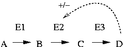

Lecture 2 Feb 2001 Per Kraulis
Living cells can be viewed as signal processors. That is not all they are, but it is a useful perspective in the current context. The cells receive signals from the environment in the form of specific molecules (e.g. hormones, transmitter substances), nutrient levels (e.g. glucose, lipids) or stresses (e.g. osmotic pressure, poisons, heat, cold). The cells also produce signals internally, e.g. in the cell cycle, where such events as DNA damage or failures in chromosome duplication generate signals that stop cell division from occuring, and may also start repair processes or to begin the cell death program (apoptosis).
The various signals and the machinery that processes them form a regulatory network. The purpose of the network is to control the life processes so that the organism can grow, survive and multiply in a constantly changing and challenging environment. Regulation is the key term here. The appropriate systems must be started up, or shut down, as the environment changes. If suddenly glucose becomes available, then the bacterium must produce glucose transport proteins and enzymes for the glucose metabolism. If the glucose level is then reduced, the bacterium needs to reduce the production of these proteins since otherwise unnecessary energy is wasted on synthesizing the proteins. An important concept in this connection is homeostasis, the tendency of living systems to maintain a steady level of important metabolites or other components in the face of varying external circumstances. The most obvious example is the constant body temperature in many animals.
 An essential mechanism in regulation is feedback. The result of a process feeds back signals to control the process itself. This makes the process self-monitoring to some degree. One distinguishes between negative and positive feedback.
Negative feedback is a system where the product or resulting signal down-regulates the process. This may be useful to keep the level of a substance at a steady state. This is very common in the metabolism, since the organism only wants to produce as much as is needed of some particular compound, and no more. For example, many synthesis pathways for compounds such as amino acids are regulated by negative feedback, where the final product of the pathway influences some early step in the pathway negatively by inhibiting an enzyme. In the figure, compound D binds to enzyme E2, thereby inhibiting it, and reducing the further production of itself.
Positive feedback is a signalling loop where the product reinforces the process. This is found in systems which have to maintain one chosen state among several alternatives, e.g. the specific state of a differentiated cell, or to commit a cell towards a chosen development path. The starting point is an undecided state, which by some process (influence from the outside, or purely stochastic events) starts to tilt over in one particular direction. This small, initial bias is then reinforced by the regulatory system, so that a final, fixed, stable state is reached.
A special, very important class of regulatory networks generate cyclic processes. These are processes that never reach a steady state, but move between stages or states in an ordered fashion. There are many important examples of cyclic processes: The cell cycle is the prime example, but one could also mention the circadian clock (the changes following the time of day) in many plants and animals. These systems require complex networks having a dynamically cyclic behaviour that must both be robust and sensitive: Robust in the sense that it must continue to work even when the environment changes, and sensitive so that the process can adjust when the appropriate corrective signals are received from the environment.